What is alluvial diagram?
Alluvial diagram is a variant of a Parallel Coordinates Plot (PCP) but for categorical variables. Variables are assigned to vertical axes that are parallel. Values are represented with blocks on each axis. Observations are represented with alluvia (sing. “alluvium”) spanning across all the axes.
You create alluvial diagrams with function alluvial().
Let us use Titanic dataset as an example. As it is a
table, we need to convert it to a data frame
tit <- as.data.frame(Titanic, stringsAsFactors = FALSE)
head(tit)## Class Sex Age Survived Freq
## 1 1st Male Child No 0
## 2 2nd Male Child No 0
## 3 3rd Male Child No 35
## 4 Crew Male Child No 0
## 5 1st Female Child No 0
## 6 2nd Female Child No 0and create the alluvial diagram:
alluvial(
tit[,1:4],
freq=tit$Freq,
col = ifelse(tit$Survived == "Yes", "orange", "grey"),
border = ifelse(tit$Survived == "Yes", "orange", "grey"),
hide = tit$Freq == 0,
cex = 0.7
)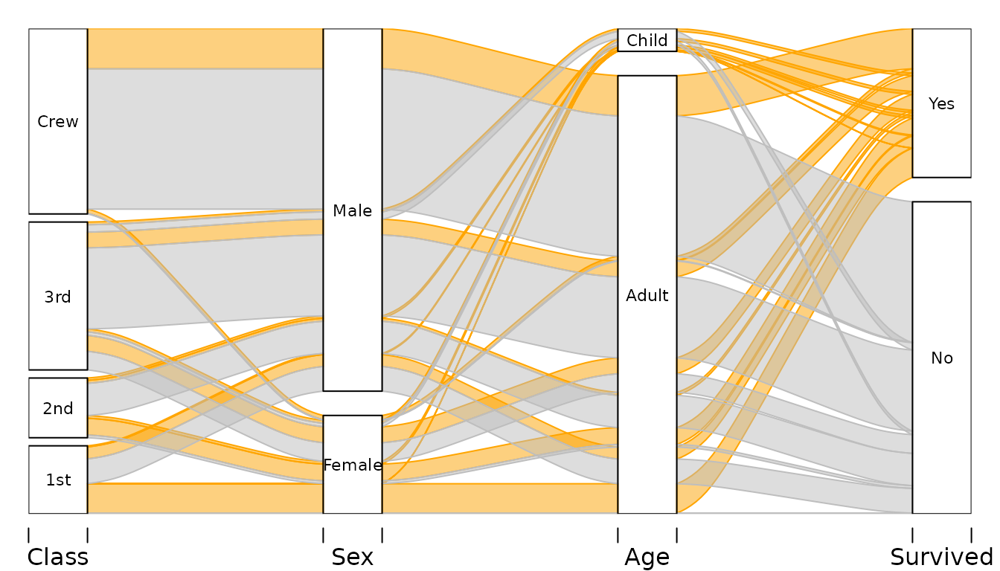
We have four variables:
-
Classon the ship the passanger occupied -
Sexof the passenger -
Ageof the passenger - Whether the passenger
Survived.
Vertical sizes of the blocks are proportional to the frequency, and so are the widths of the alluvia. Alluvia represent all combinations of values of the variables in the dataset. By default the vertical order of the alluvia is determined by alphabetical ordering of the values on each variable lexicographically (last variable changes first) drawn from bottom to top. In this example, the color is determined by passengers’ survival status, i.e. passenger who survived are represented with orange alluvia.
Alluvial diagrams are very useful in reading various conditional and uncoditional distributions in a multivariate dataset. For example, we can see that:
- Most of the Crew did not survived – majority of the height of the Crew category is covered by grey alluvia.
- Majortity of the Crew where adult men.
- Almost all women from the 1st Class did survive.
- The women who did not survive come mostly from 3rd class.
Simple use
Minimal use requires supplying data frame(s) as first argument, and a
vector of frequencies as the freq argument. By default all
alluvia are drawn using mildly transparent gray.
Two variables Class and Survived:
# Survival status and Class
tit %>% group_by(Class, Survived) %>%
summarise(n = sum(Freq)) -> tit2d## `summarise()` has regrouped the output.
## ℹ Summaries were computed grouped by Class and Survived.
## ℹ Output is grouped by Class.
## ℹ Use `summarise(.groups = "drop_last")` to silence this message.
## ℹ Use `summarise(.by = c(Class, Survived))` for per-operation grouping
## (`?dplyr::dplyr_by`) instead.
alluvial(tit2d[,1:2], freq=tit2d$n)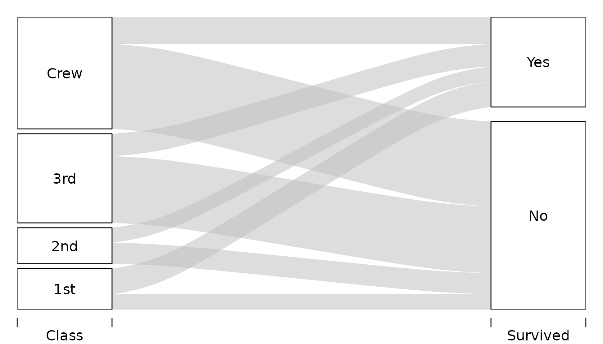
Three variables Sex, Class, and
Survived:
# Survival status, Sex, and Class
tit %>% group_by(Sex, Class, Survived) %>%
summarise(n = sum(Freq)) -> tit3d## `summarise()` has regrouped the output.
## ℹ Summaries were computed grouped by Sex, Class, and Survived.
## ℹ Output is grouped by Sex and Class.
## ℹ Use `summarise(.groups = "drop_last")` to silence this message.
## ℹ Use `summarise(.by = c(Sex, Class, Survived))` for per-operation grouping
## (`?dplyr::dplyr_by`) instead.
alluvial(tit3d[,1:3], freq=tit3d$n)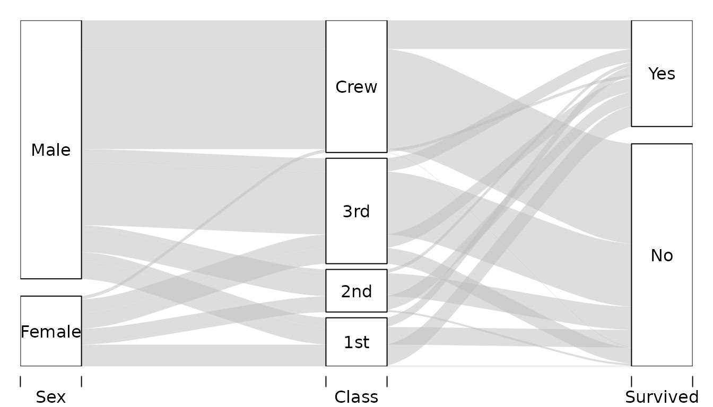
Customizing
There are several ways to customize alluvial diagrams with
alluvial() the following sections illustrate probably most
common usecases.
Customizing colors
Colors of the alluvia can be customized with col,
border and alpha arguments. For example:
alluvial(
tit3d[,1:3],
freq=tit3d$n,
col = ifelse( tit3d$Sex == "Female", "pink", "lightskyblue"),
border = "grey",
alpha = 0.7,
blocks=FALSE
)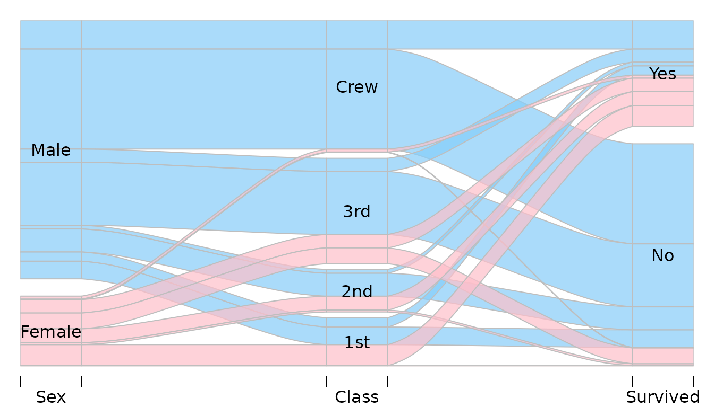
Hiding and reordering alluvia
Hiding
With alluvial sometimes it is desirable to omit plotting
of some of the alluvia. This is most frequently the case with larger
datasets in which there are a lot of combinations of values of the
variables associated with very small frequencies, or even 0s. Alluvia
can be hidden with argument hide expecting a logical vector
of length equal to the number of rows in the data. Alluvia for which
hide is FALSE are not plotted. For example, to
hide alluvia with frequency less than 150:
alluvial(tit2d[,1:2], freq=tit2d$n, hide=tit2d$n < 150)This skips drawing the alluvia corresponding to the following rows in
tit data frame:
tit2d %>% select(Class, Survived, n) %>%
filter(n < 150)## # A tibble: 2 × 3
## # Groups: Class [2]
## Class Survived n
## <chr> <chr> <dbl>
## 1 1st No 122
## 2 2nd Yes 118You can see the gaps e.g. on the “Yes” and “No” category blocks on
the Survived axis.
If you would rather omit these rows from the plot alltogether
(i.e. no gaps), you need to filter your data before it is used by
alluvial().
Changing “layers”
By default alluvia are plotted in sequence determined by the row order in the dataset. It determines which alluvia will be plotted “on top” of which others.
Consider simple data:
d <- data.frame(
x = c(1, 2, 3),
y = c(3 ,2, 1),
freq=c(1,1,1)
)
d## x y freq
## 1 1 3 1
## 2 2 2 1
## 3 3 1 1As there are three rows, we will have three alluvia:
alluvial(d[,1:2], freq=d$freq, col=1:3, alpha=1)
# Reversing the order
alluvial(d[ 3:1, 1:2 ], freq=d$freq, col=3:1, alpha=1)Note that to keep colors matched in the same way to the alluvia we
had to reverse the col argument too. Instead of reordering
the data and keeping track of the other arguments plotting order can be
adjusted with layer argument:
alluvial(d[,1:2], freq=d$freq, col=1:3, alpha=1,
layer=3:1)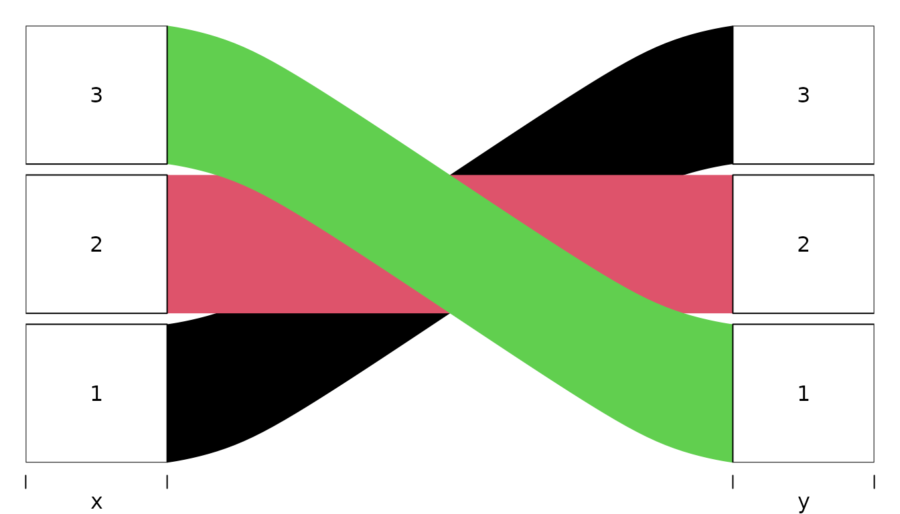
The value of layer is passed to order so it
is possible to use logical vectors e.g. if you only want to put some of
the flows on top. For example, for Titanic data to put all alluvia for
all survivors on top we can:
alluvial(tit3d[,1:3], freq=tit3d$n,
col = ifelse( tit3d$Survived == "Yes", "orange", "grey" ),
alpha = 0.8,
layer = tit3d$Survived == "No"
)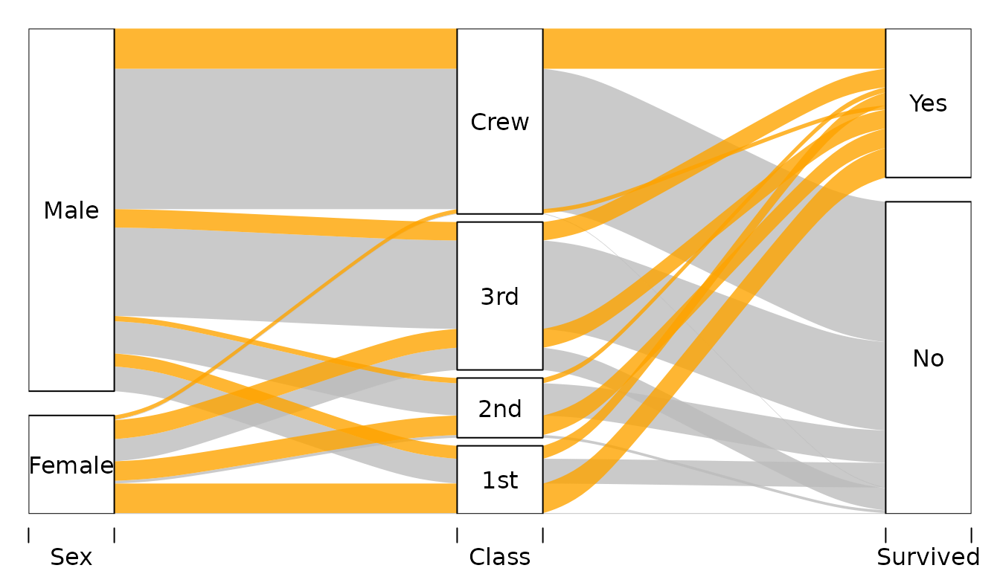
First layer is the one on top, second layer below the first and so
on. Consequently, in the example above, Survived == "No" is
ordered after Survived == "Yes" so the former is below the
latter.
Adjusting vertical order of categories
By default alluvial() orders the values on each axis in
an alphabetic order. This happens irrespectively of the ordering of
observations in the plotted dataset. It is possible to override the
default ordering by transforming the variables of interest into
factors with a custom ordering of levels.
Consider the following example data:
d <- data.frame(
col = c("#A6CEE3", "#1F78B4", "#B2DF8A", "#33A02C", "#FB9A99",
"#E31A1C", "#FDBF6F", "#FF7F00"), # from RColorBrewer Paired palette
Temperature = rep(c("cool", "hot"), each=4),
Luminance = rep(c("bright", "dark"), 4),
Color = rep(c("blue", "green", "red", "orange"), each=2)
) %>%
mutate(
n = 1
)
d## col Temperature Luminance Color n
## 1 #A6CEE3 cool bright blue 1
## 2 #1F78B4 cool dark blue 1
## 3 #B2DF8A cool bright green 1
## 4 #33A02C cool dark green 1
## 5 #FB9A99 hot bright red 1
## 6 #E31A1C hot dark red 1
## 7 #FDBF6F hot bright orange 1
## 8 #FF7F00 hot dark orange 1Plotting it with alluvial() with default settings will
give:
alluvial(
select(d, Temperature, Luminance, Color),
freq=d$n,
col = d$col,
alpha=0.9
)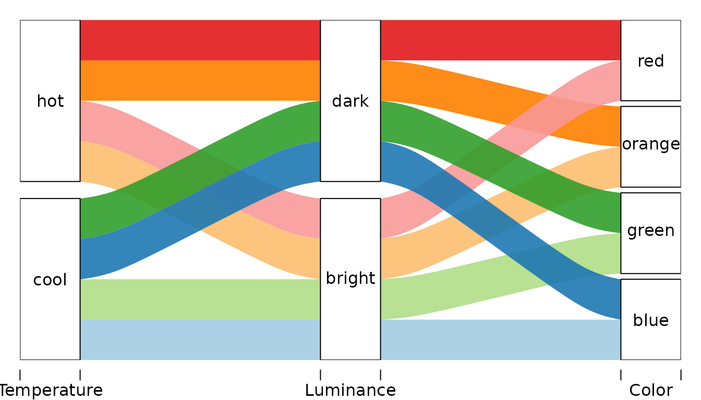
Let’s change the order of categories of:
- the
Coloraxis such that it is (from the bottom): green, blue, orange, red. - the
Luminanceaxis such that it is reversed.
For each variable we create a factor with a vector of unique values
of that variable sorted the way we want passed to levels
argument of factor():
d <- d %>%
mutate(
Color_f = factor(Color, levels=c("green", "blue", "red", "orange")),
Luminance_f = factor(Luminance, levels=c("dark", "bright"))
)… and plot
alluvial(
select(d, Temperature, Luminance_f, Color_f),
freq=d$n,
col = d$col,
alpha=0.9
)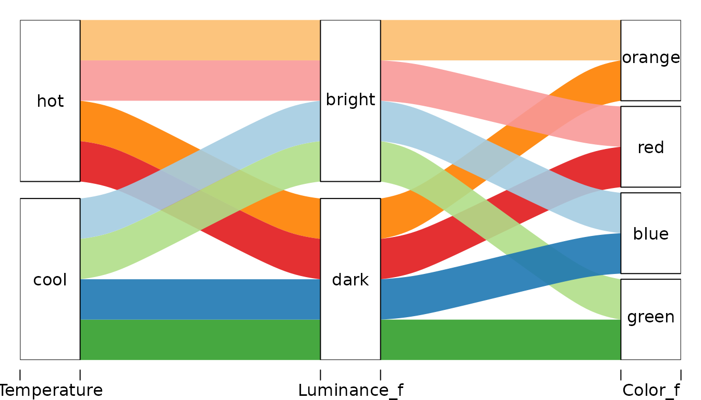
Another version recognizing that in data Color is nested
in Temperature. Different axis order gives clearer picture
of the data structure.
alluvial(
select(d, Temperature, Color_f, Luminance_f),
freq=d$n,
col = d$col,
alpha=0.9
)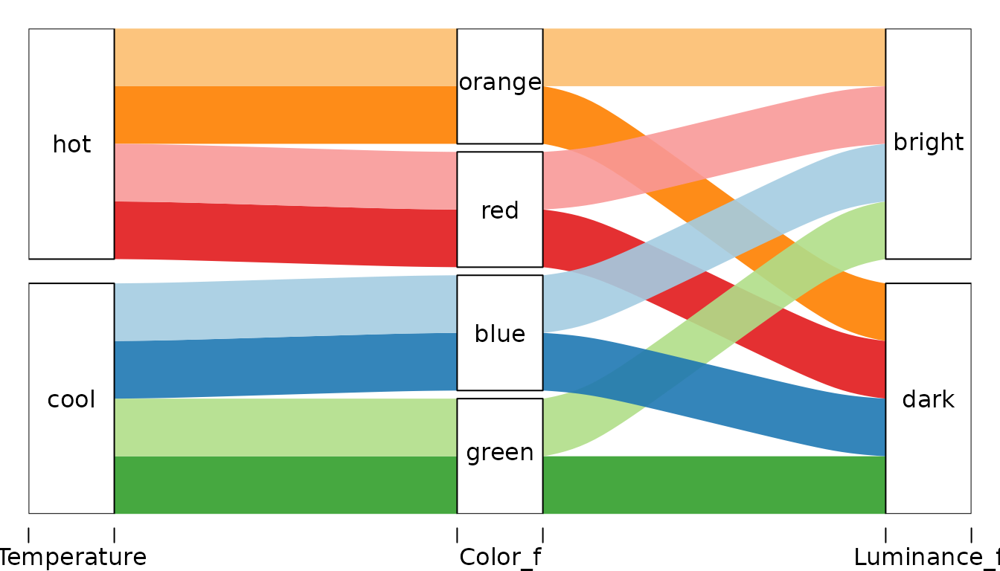
Adjusting vertical order of alluvia
This feature is experimental!
Usually the order of the variables (axes) is rather unimportant.
However, having particular two variables next to each other facilitates
analyzing dependency between those two variables. In alluvial diagrams
the ordering of the variables determines the vertical plotting order of
the alluvia. This vertical order, together with setting
blocks to FALSE, can be used to turn category
blocks into stacked barcharts.
Consider two versions of subsets of the Titanic data that differ only in the order of variables.
tit %>% group_by(Sex, Age, Survived) %>%
summarise( n= sum(Freq)) -> x## `summarise()` has regrouped the output.
## ℹ Summaries were computed grouped by Sex, Age, and Survived.
## ℹ Output is grouped by Sex and Age.
## ℹ Use `summarise(.groups = "drop_last")` to silence this message.
## ℹ Use `summarise(.by = c(Sex, Age, Survived))` for per-operation grouping
## (`?dplyr::dplyr_by`) instead.
tit %>% group_by(Survived, Age, Sex) %>%
summarise( n= sum(Freq)) -> y## `summarise()` has regrouped the output.
## ℹ Summaries were computed grouped by Survived, Age, and Sex.
## ℹ Output is grouped by Survived and Age.
## ℹ Use `summarise(.groups = "drop_last")` to silence this message.
## ℹ Use `summarise(.by = c(Survived, Age, Sex))` for per-operation grouping
## (`?dplyr::dplyr_by`) instead.In x we have Sex-Age-Survived-n while in y
we have Survived-Age-Sex-n.
If we color the alluvia according to the first axis, the category blocks of Age and Survived become barcharts showing relative frequencies of Men and Women within categories of Age and Survived.
alluvial(x[,1:3], freq=x$n,
col = ifelse(x$Sex == "Male", "orange", "grey"),
alpha = 0.8,
blocks=FALSE
)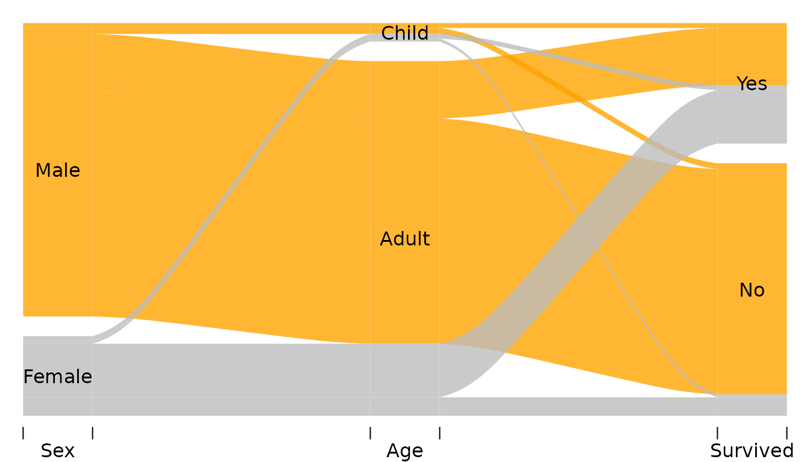
Now we can see for example that
- There were a little bit of more girls than boys (category
Age == "Child") - Among surviors there were roughly the same number of Men and Women.
Argument ordering can be used to fully customize the
ordering of each alluvium on each axis without the need to reorder the
axes themselves. This feature is experimental as you can easily break
things. It expects a list of numeric vectors or NULLs one
for each variable in the data:
- Value
NULLdoes not change the default order on the corresponding axis. - A numeric vector should have length equal to the number of rows in the data and is determines the vertical order of the alluvia on the corresponding axis.
For example:
alluvial(y[,1:3], freq=y$n,
# col = RColorBrewer::brewer.pal(8, "Set1"),
col = ifelse(y$Sex == "Male", "orange", "grey"),
alpha = 0.8,
blocks = FALSE,
ordering = list(
order(y$Survived, y$Sex == "Male"),
order(y$Age, y$Sex == "Male"),
NULL
)
)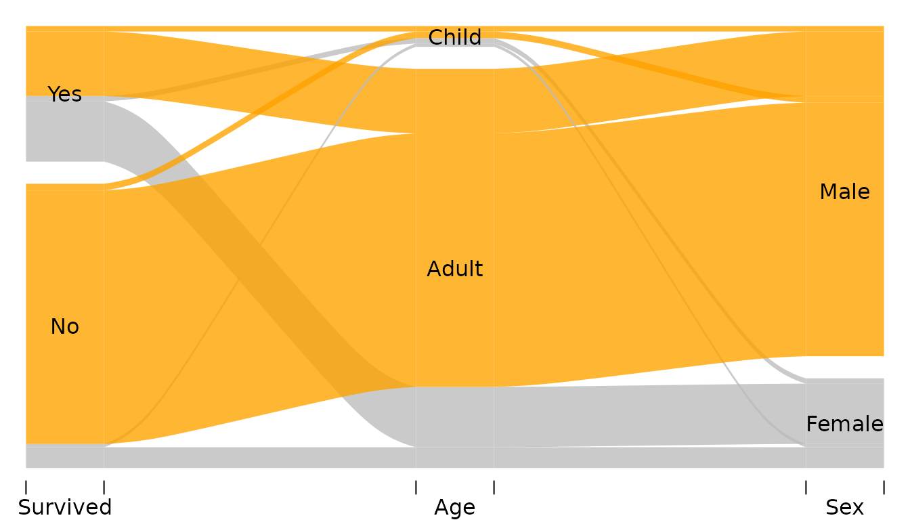
The list passed to ordering has has three elements
corresponding to Survived, Age, and
Sex respectively (that’s the order of the variables in
y). The elements of this list are
- Call to
ordersorting the alluvia on theSurvivedaxis. The alluvia need to be sorted according toSurvivedfirst (otherwise the categories “Yes” and “No” will be destroyed) and according to theSexsecond. - Call to
ordersorting the alluvia on theAgeaxis. The alluvia need to be sorted according toAgefirstSexsecond. -
NULLleaves the default ordering onSexaxis.
In the example below alluvia are colored by sex (red=Female, blue=Male) and survival status (bright=survived, dark=did not survive). Each category block is a stacked barchart showing relative freuquencies of man/women who did/did not survive. The alluvia are reordered on the last axis (Age) so that Sex categories are next each other (red together and blue together):
pal <- c("red4", "lightskyblue4", "red", "lightskyblue")
tit %>%
mutate(
ss = paste(Survived, Sex),
k = pal[ match(ss, sort(unique(ss))) ]
) -> tit
alluvial(tit[,c(4,2,3)], freq=tit$Freq,
hide = tit$Freq < 10,
col = tit$k,
border = tit$k,
blocks=FALSE,
ordering = list(
NULL,
NULL,
order(tit$Age, tit$Sex )
)
)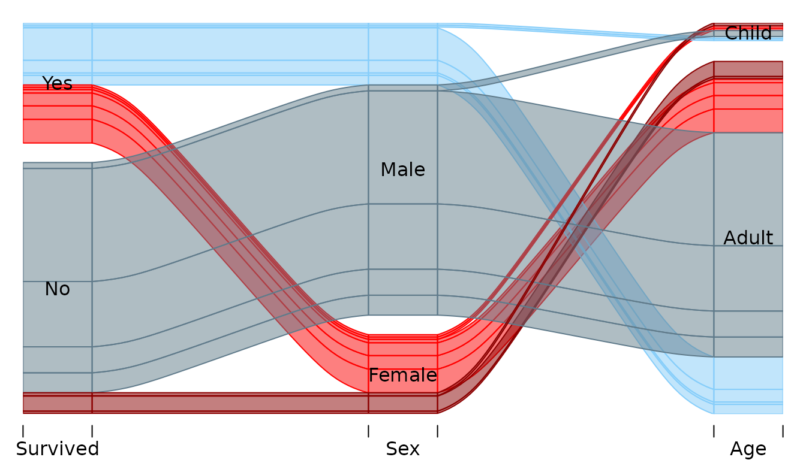
Appendix
## R version 4.6.0 (2026-04-24)
## Platform: x86_64-pc-linux-gnu
## Running under: Ubuntu 24.04.4 LTS
##
## Matrix products: default
## BLAS: /usr/lib/x86_64-linux-gnu/openblas-pthread/libblas.so.3
## LAPACK: /usr/lib/x86_64-linux-gnu/openblas-pthread/libopenblasp-r0.3.26.so; LAPACK version 3.12.0
##
## locale:
## [1] LC_CTYPE=C.UTF-8 LC_NUMERIC=C LC_TIME=C.UTF-8
## [4] LC_COLLATE=C.UTF-8 LC_MONETARY=C.UTF-8 LC_MESSAGES=C.UTF-8
## [7] LC_PAPER=C.UTF-8 LC_NAME=C LC_ADDRESS=C
## [10] LC_TELEPHONE=C LC_MEASUREMENT=C.UTF-8 LC_IDENTIFICATION=C
##
## time zone: UTC
## tzcode source: system (glibc)
##
## attached base packages:
## [1] stats graphics grDevices utils datasets methods base
##
## other attached packages:
## [1] dplyr_1.2.1 alluvial_0.2-0
##
## loaded via a namespace (and not attached):
## [1] vctrs_0.7.3 cli_3.6.6 knitr_1.51 rlang_1.2.0
## [5] xfun_0.57 otel_0.2.0 purrr_1.2.2 generics_0.1.4
## [9] textshaping_1.0.5 jsonlite_2.0.0 glue_1.8.1 htmltools_0.5.9
## [13] ragg_1.5.2 sass_0.4.10 rmarkdown_2.31 tibble_3.3.1
## [17] evaluate_1.0.5 jquerylib_0.1.4 fastmap_1.2.0 yaml_2.3.12
## [21] lifecycle_1.0.5 compiler_4.6.0 fs_2.1.0 pkgconfig_2.0.3
## [25] htmlwidgets_1.6.4 tidyr_1.3.2 systemfonts_1.3.2 digest_0.6.39
## [29] R6_2.6.1 utf8_1.2.6 tidyselect_1.2.1 pillar_1.11.1
## [33] magrittr_2.0.5 bslib_0.10.0 withr_3.0.2 tools_4.6.0
## [37] pkgdown_2.2.0 cachem_1.1.0 desc_1.4.3